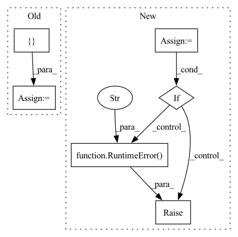

Pattern ID :34756
Before Change
async def rpc_info(self, request: runtime_pb2.ExpertUID, context: P2PContext) -> runtime_pb2.ExpertInfo:
Return metadata about stored block uids and current load
rpc_info = {}
if request.uid:
backend = self.module_backends[request.uid]
rpc_info.update(self.module_backends[request.uid].get_info())
else:After Change
if request.uid:
block_info = self.module_backends[request.uid].get_info()
common_keys = set(result.keys()) & set(block_info.keys())
if common_keys:
raise RuntimeError(f"The block"s rpc_info has keys reserved for the server"s rpc_info: {common_keys}" )
result.update(block_info)
return runtime_pb2.ExpertInfo(serialized_info=MSGPackSerializer.dumps(result))
In pattern: SUPERPATTERN
Frequency: 4
Non-data size: 6
Instances Fragment ID: 99755811
Project Name: bigscience-workshop/distributed-bloom
Commit Name: 6b12b0d050f73826f6f66481d40146370e2bebbb
Time: 2023-01-12
Author: borzunov.alexander@gmail.com
File Name: src/petals/server/handler.py
M Class Name: TransformerConnectionHandler
N Class Name: TransformerConnectionHandler
M Method Name: rpc_info(3)
N Method Name: rpc_info(3)
M Parent Class: ConnectionHandler
N Parent Class: ConnectionHandler
M File Name: src/petals/server/handler.py
N File Name: src/petals/server/handler.py
M Start Line: 385
M End Line: 396
N Start Line: 387
N End Line: 402
Before Change
salience over all examples. They are sorted according to their
salience.
config = config or {}
// If no specific inputs provided, use the entire dataset.
inputs_to_use = indexed_inputs or dataset.examples
token_saliencies = self.salience_mappers[
config[SALIENCE_MAPPER_KEY]].run_with_metadata(inputs_to_use, model,After Change
if not config:
raise TypeError("config must be provided")
salience_key: Optional[str] = config.get(SALIENCE_MAPPER_KEY)
if not salience_key:
raise ValueError(f"config[{SALIENCE_MAPPER_KEY}] must be provided")
salience_interpreter: Optional[
lit_components.Interpreter] = self.salience_mappers.get(salience_key)
if not (salience_interpreter and
salience_interpreter.is_compatible(model=model, dataset=dataset)):
raise RuntimeError(f"Requested interpreter, {salience_key}, is "
"incompatible with model and/or dataset." )
// If no specific inputs provided, use the entire dataset.
inputs_to_use = indexed_inputs or dataset.examples
token_saliencies = salience_interpreter.run_with_metadata( Fragment ID: 99755815
Project Name: pair-code/lit
Commit Name: ecd3a6623f2a0d45ae26c74d0d72fb68b7bcb9aa
Time: 2022-11-03
Author: ryanmullins@google.com
File Name: lit_nlp/components/salience_clustering.py
M Class Name: SalienceClustering
N Class Name: SalienceClustering
M Method Name: run_with_metadata(6)
N Method Name: run_with_metadata(6)
M Parent Class: lit_components.Interpreter
N Parent Class: lit_components.Interpreter
M File Name: lit_nlp/components/salience_clustering.py
N File Name: lit_nlp/components/salience_clustering.py
M Start Line: 187
M End Line: 193
N Start Line: 193
N End Line: 210
Before Change
x = set_device(input_data, device)
else:
if dtypes is None:
dtypes = [ torch.floatAfter Change
input_data: INPUT_DATA_TYPE, device: torch.device
) -> Tuple[INPUT_DATA_TYPE, CORRECTED_INPUT_SIZE_TYPE]:
Reads sample input data to get the input size.
x = None
if isinstance(input_data, torch.Tensor):
input_size = get_correct_input_sizes(input_data.size())
x = [set_device(input_data, device)]
elif isinstance(input_data, (list, tuple)):
if all(isinstance(data, torch.Tensor) for data in input_data):
input_sizes = [
data.size() for data in input_data // type: ignore[union-attr]
]
input_size = get_correct_input_sizes(input_sizes)
x = set_device(input_data, device)
if x is None:
raise RuntimeError(
"Input type is not recognized. Please ensure input_data is valid.\n"
"For multiple inputs to the network, ensure input_data passed in is "
"a sequence of tensors or a list of tuple sizes. If you are having "
"trouble here, please submit a GitHub issue."
)
return x, input_size
Fragment ID: 99755802
Project Name: tyleryep/torchinfo
Commit Name: b3510714cc642b1e896e15b54b25bdb034faa332
Time: 2020-12-24
Author: tyep@cs.stanford.edu
File Name: torchinfo/torchinfo.py
M Class Name: AnonimousClass
N Class Name: AnonimousClass
M Method Name: process_input_data(2)
N Method Name: process_input_data(4)
M Parent Class:
N Parent Class:
M File Name: torchinfo/torchinfo.py
N File Name: torchinfo/torchinfo.py
M Start Line: 193
M End Line: 222
N Start Line: 217
N End Line: 241